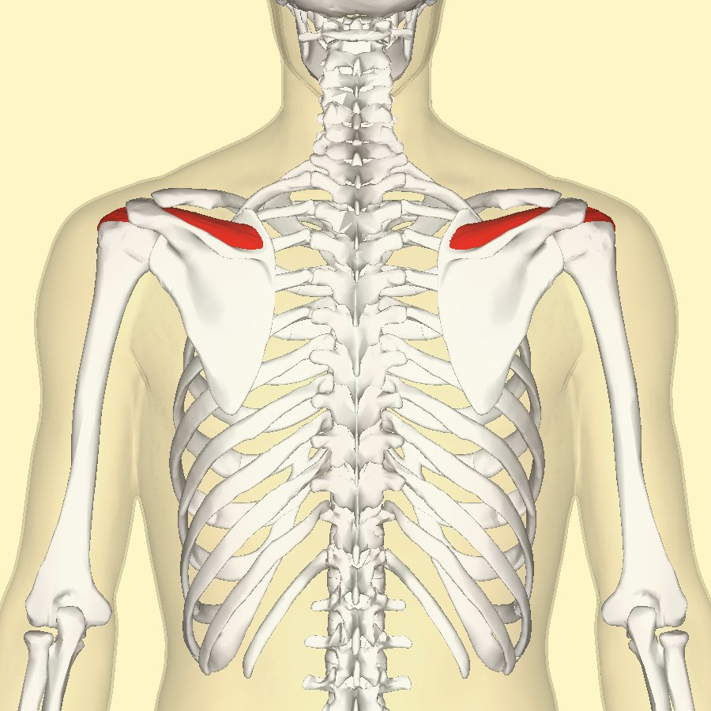
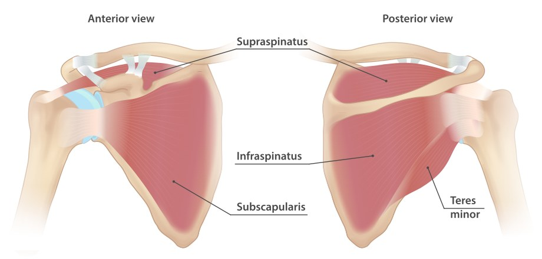
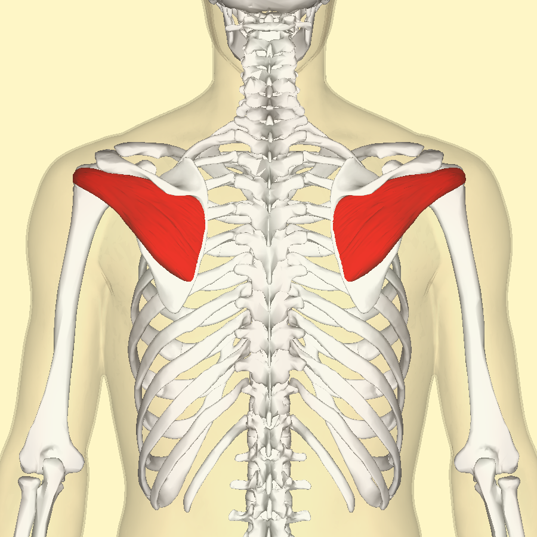
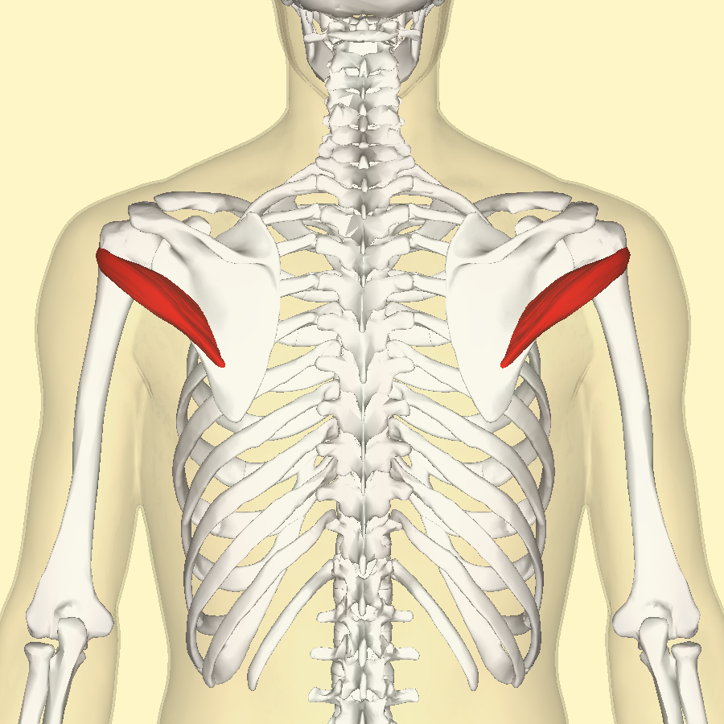
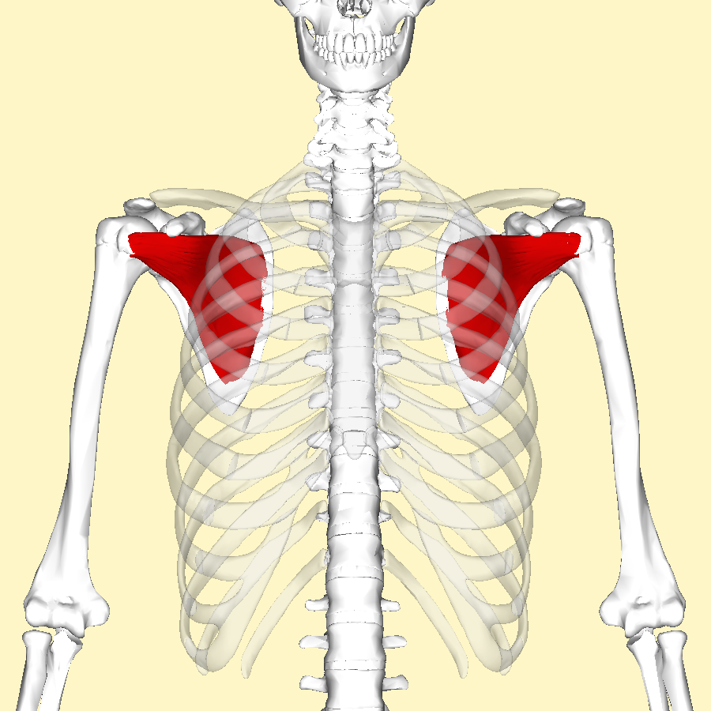
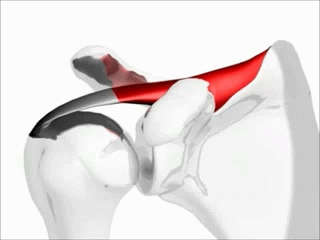

גף עליון · שרירי הכתף
סופראספינאטוס (Supraspinatus)
מתחיל את הרחקת הזרוע ומסייע לייצב את ראש עצם הזרוע בתוך מפרק הכתף.
חמש העובדות לזכור
OIAI + אספקת דם| 01 מוצא (Origin) | הגומץ העל-קוצי של השכמה (Supraspinous fossa of the scapula) |
|---|---|
| 02 אחז (Insertion) | הגבשושית הגדולה של עצם הזרוע, הפן העליון (Greater tubercle, superior facet) |
| 03 עצבוב (Innervation) | עצב על-שכמי C5-C6 (Suprascapular nerve) |
| 04 פעולה (Action) | התחלת הרחקה של הזרוע (15 המעלות הראשונות) וייצוב ראש ההומרוס (Abduction; humeral head stabilization) |
| 05 אספקת דם (Blood supply) | עורק על-שכמי (Suprascapular artery) |
התאמה לחומרי הקורס · שלוש נקודות לאימות
הנתונים בכרטיסים נשמרו כפי שמסרת. בסיכום המקוון של שיעור 8 מופיעים המוצא, העצב העל-שכמי ותחילת ההרחקה ב-15 המעלות הראשונות.
- הפן העליון של הגבשושית הגדולה אינו מפורט בסיכום.
- שורשי C5-C6 אינם מפורטים בו.
- אספקת הדם לשריר אינה מפורטת בו.
אלה השלמות שלא אומתו מול המצגת המקורית, ולא סתירות שנמצאו. לסיכום שיעור 8.
01 / להכיר את המקום
מבנה
הסופראספינאטוס ממלא את הגומץ העל-קוצי של השכמה, מעל קוץ השכמה (Spine of the scapula).
- המוצא נמצא בגומץ העל-קוצי.
- הגיד עובר מתחת לאקרומיון (Acromion).
- האחז נמצא בפן העליון של הגבשושית הגדולה של עצם הזרוע.
חפשי את הרצועה הסגולה מעל קוץ השכמה. השריר עצמו מודגש בצבע.


חלק מארבעה · SITS
הסופראספינאטוס הוא אחד מארבעת שרירי השרוול המסובב. יחד הם מסייעים לייצב את ראש עצם הזרוע במפרק.
- Sסופראספינאטוס (Supraspinatus)
- Iאינפראספינאטוס (Infraspinatus)
- Tטרס מינור (Teres minor)
- Sסאבסקפולריס (Subscapularis)
באיור המשותף מודגשת קבוצת השרירים. בגלריה שמתחת אפשר לראות כל שריר בנפרד.



לראות כל אחד משרירי SITS בנפרד






02 / לחבר לתנועה
פעולה
הסופראספינאטוס מתחיל את הרחקת הזרוע (Abduction).
- 15 המעלות הראשונות: תחילת ההרחקה, לפי חומרי הקורס.
- ייצוב: מסייע להחזיק את ראש ההומרוס במפרק בזמן התנועה.
מתחיל תנועה, שומר על יציבות.
ההמחשה מציגה את תנועת ההרחקה. היא אינה מד זווית ואינה מסמנת את גבול 15 המעלות.

.gif){kind=link}
03 / עצב וכלי דם
עצבוב ואספקת דם
- עצבוב: עצב על-שכמי (Suprascapular nerve), שורשים C5-C6.
- אספקת דם: עורק על-שכמי (Suprascapular artery).
העצב והעורק חולקים את השם "על-שכמי". זכרי להפריד בין התפקידים: עצבוב לעומת אספקת דם.
04 / משמעות קלינית
המעבר מתחת לאקרומיון
גיד הסופראספינאטוס עובר מתחת לאקרומיון, ולכן הוא פגיע ללחץ ולקרעים.
המיקום האנטומי עוזר להבין את הפגיעוּת של הגיד.
לראות במרחב
מודל תלת-ממדי
כאן אפשר יהיה לסובב את השריר ולבחון את היחס שלו לשכמה ולראש עצם הזרוע.
בתצוגת הפיילוט מוצג מקום שמור למודל.
סופראספינאטוס (Supraspinatus)
מקום שמור למודל BodyParts3D דרך Anatomary.
להמשיך מכאן
קישורים וחומרי חזרה
חפיסות להמשך תרגול
- שרירי גפה עליונה - מוצא, אחז, עצבוב ופעולה (NotebookLM)
- אטלס שרירי הגפה העליונה (NotebookLM)
- שרירי גפה עליונה - זיהוי מהתמונה (מה-PDF)
שמות בלבד. קישורי השיתוף יתווספו בהמשך.